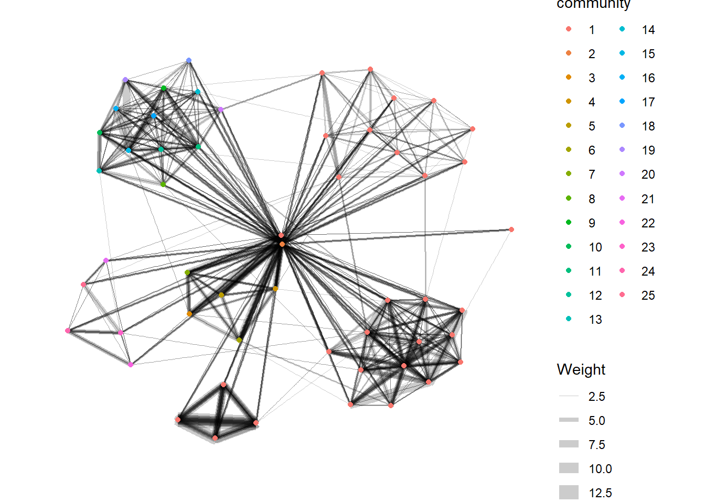

pacman::p_load(tidyverse, lubridate,
clock, igraph,
tidygraph, ggraph,
visNetwork, graphlayouts)Hands-on Exercise 8
27 Modelling, Visualising and Analysing Network Data
27.1 Overview and Learning Outcomes
This hands-on exercise is based on Chapter 27 of the R for Visual Analytics book.
The learning outcomes are:
Create graph object data frames, manipulate them using appropriate functions of the dplyr, lubridate, and tidygraph packages.
Build network graph visualisation using appropriate functions in the ggraph package.
Compute network geometrics using the tidygraph package.
Build advanced graph visualisations by incorporating network geometrics.
Build interactive network visualisation using the visNetwork package.
27.2 Getting Started
27.2.1 Installing and Loading Required Libraries
In this hands-on exercise, the following R packages are used:
tidyverse (i.e. readr, tidyr, dplyr) for performing data science tasks such as importing, tidying, and wrangling data;
igraph, tidygraph, ggraph and visNetwork for network data modelling and visualisation; and
graphlayouts for implementing graph layout algorithms.
The code chunk below uses the p_load() function in the pacman package to check if the packages are installed. If yes, they are then loaded into the R environment. If no, they are installed, then loaded into the R environment.
27.2.2 Importing Data
The two datasets for this hands-on exercise are imported into the R environment using the read_csv() function in the readr package and stored as the R object, GAStech_nodes and GAStech_edges. The first is the nodes data, the second is the edges (link) data. They contain data from an oil exploration and extraction company.
GAStech_nodes = read_csv("data/GAStech_email_node.csv")
GAStech_edges = read_csv("data/GAStech_email_edge-v2.csv")The tibble data frames, GAStech_nodes and GAStech_edges, have 4 columns and 54 rows, and 8 columns and 9,063 rows respectively. The former contains the names, departments, and titles of the company’s employees. The latter consists of two weeks’ worth of email correspondences between the employees.
glimpse(GAStech_edges)Rows: 9,063
Columns: 8
$ source <dbl> 43, 43, 44, 44, 44, 44, 44, 44, 44, 44, 44, 44, 26, 26, 26…
$ target <dbl> 41, 40, 51, 52, 53, 45, 44, 46, 48, 49, 47, 54, 27, 28, 29…
$ SentDate <chr> "6/1/2014", "6/1/2014", "6/1/2014", "6/1/2014", "6/1/2014"…
$ SentTime <time> 08:39:00, 08:39:00, 08:58:00, 08:58:00, 08:58:00, 08:58:0…
$ Subject <chr> "GT-SeismicProcessorPro Bug Report", "GT-SeismicProcessorP…
$ MainSubject <chr> "Work related", "Work related", "Work related", "Work rela…
$ sourceLabel <chr> "Sven.Flecha", "Sven.Flecha", "Kanon.Herrero", "Kanon.Herr…
$ targetLabel <chr> "Isak.Baza", "Lucas.Alcazar", "Felix.Resumir", "Hideki.Coc…The GAStech_edges has a “SentDate” variable that is treated as character data type instead of date data type. This will need to be changed.
27.2.3 Preparing Data
First, the GAStech_edges tibble data frame is manipulated using the dmy() and wday() functions in the lubridate package
The
dmy()function transforms the “SentDate” variable to the date data type.The
wday()function returns the day of the week as a decimal number or an ordered factor if label is TRUE. The “abbr” argument set as FALSE keeps the days spellings in full, i.e. Monday. The function will create a new column in the data frame i.e. Weekday. The values are in ordinal scale.
GAStech_edges = GAStech_edges %>%
mutate(SendDate = dmy(SentDate)) %>%
mutate(Weekday = wday(SentDate,
label = TRUE,
abbr = FALSE))
glimpse(GAStech_edges)Rows: 9,063
Columns: 10
$ source <dbl> 43, 43, 44, 44, 44, 44, 44, 44, 44, 44, 44, 44, 26, 26, 26…
$ target <dbl> 41, 40, 51, 52, 53, 45, 44, 46, 48, 49, 47, 54, 27, 28, 29…
$ SentDate <chr> "6/1/2014", "6/1/2014", "6/1/2014", "6/1/2014", "6/1/2014"…
$ SentTime <time> 08:39:00, 08:39:00, 08:58:00, 08:58:00, 08:58:00, 08:58:0…
$ Subject <chr> "GT-SeismicProcessorPro Bug Report", "GT-SeismicProcessorP…
$ MainSubject <chr> "Work related", "Work related", "Work related", "Work rela…
$ sourceLabel <chr> "Sven.Flecha", "Sven.Flecha", "Kanon.Herrero", "Kanon.Herr…
$ targetLabel <chr> "Isak.Baza", "Lucas.Alcazar", "Felix.Resumir", "Hideki.Coc…
$ SendDate <date> 2014-01-06, 2014-01-06, 2014-01-06, 2014-01-06, 2014-01-0…
$ Weekday <ord> Friday, Friday, Friday, Friday, Friday, Friday, Friday, Fr…A close examination of the GAStech_edges tibble data frame reveals that it consists of individual email flow records. This is not very useful for visualisation. Hence, they are aggregate by date, senders, receivers, main subject and day of the week using the filter(), group_by(), summarise(), and ungroup() functions in the dplyr packages. The output tibble data frame is GAStech_edges_aggregated. A new field “WEight” is added to count the aggregated entries that form each row.
GAStech_edges_aggregated <- GAStech_edges %>%
filter(MainSubject == "Work related") %>%
group_by(source, target, Weekday) %>%
summarise(Weight = n()) %>%
filter(source!=target) %>%
filter(Weight > 1) %>%
ungroup()
glimpse(GAStech_edges_aggregated)Rows: 1,372
Columns: 4
$ source <dbl> 1, 1, 1, 1, 1, 1, 1, 1, 1, 1, 1, 1, 1, 1, 1, 1, 1, 1, 1, 1, 1,…
$ target <dbl> 2, 2, 2, 2, 2, 3, 3, 3, 3, 3, 4, 4, 4, 4, 4, 5, 5, 5, 5, 5, 6,…
$ Weekday <ord> Sunday, Monday, Tuesday, Wednesday, Friday, Sunday, Monday, Tu…
$ Weight <int> 5, 2, 3, 4, 6, 5, 2, 3, 4, 6, 5, 2, 3, 4, 6, 5, 2, 3, 4, 6, 5,…27.3 Creating Network Objects Using tidygraph
In this section, a graph data model is created using the tidygraph package. It provides a tidy API for graph/network manipulation. While network data itself is not tidy, it can be envisioned as two tidy tables, one for node data and one for edge data. The package provides a way to switch between the two tables and provides dplyr functions for manipulating them. Furthermore it provides access to a lot of graph algorithms with return values that facilitate their use in a tidy workflow.
27.3.1 Creating tbl_graph Object
Two functions of the tidygraph package can be used to create network objects:
The
tbl_graph()function creates a tbl_graph network object from nodes and edges data.The
as_tbl_graph()function converts network data and objects to a tbl_graph network. Below are network data and objects supported by the function:a node data.frame and an edge data.frame,
data.frame, list, matrix from base,
igraph from igraph,
network from network,
dendrogram and hclust from stats,
Node from data.tree,
phylo and evonet from ape, and
graphNEL, graphAM, graphBAM from graph (in Bioconductor).
27.3.2 dplyr Verbs in tidygraph
The activate() verb from the tidygraph package serves as a switch between tibbles for nodes and edges. All dplyr verbs applied to tbl_graph object are applied to the active tibble.

In the above the .N() function is used to gain access to the node data while manipulating the edge data. Similarly, the .E() function will give the edge data and the .G() function will give the tbl_graph object itself.
27.3.3 Using tbl_graph() to Build tidygraph Data Model
In this sub-section, the tbl_graph() function in the tinygraph package is used to build an tidygraph’s network graph data frame.
GAStech_graph = tbl_graph(nodes = GAStech_nodes,
edges = GAStech_edges_aggregated,
directed = TRUE)27.3.4 Reviewing Output Graph Object
GAStech_graph# A tbl_graph: 54 nodes and 1372 edges
#
# A directed multigraph with 1 component
#
# Node Data: 54 × 4 (active)
id label Department Title
<dbl> <chr> <chr> <chr>
1 1 Mat.Bramar Administration Assistant to CEO
2 2 Anda.Ribera Administration Assistant to CFO
3 3 Rachel.Pantanal Administration Assistant to CIO
4 4 Linda.Lagos Administration Assistant to COO
5 5 Ruscella.Mies.Haber Administration Assistant to Engineering Group Mana…
6 6 Carla.Forluniau Administration Assistant to IT Group Manager
7 7 Cornelia.Lais Administration Assistant to Security Group Manager
8 44 Kanon.Herrero Security Badging Office
9 45 Varja.Lagos Security Badging Office
10 46 Stenig.Fusil Security Building Control
# ℹ 44 more rows
#
# Edge Data: 1,372 × 4
from to Weekday Weight
<int> <int> <ord> <int>
1 1 2 Sunday 5
2 1 2 Monday 2
3 1 2 Tuesday 3
# ℹ 1,369 more rowsThe output above reveals that GAStech_graph is a tbl_graph object with 54 nodes and 4,541 edges.
The command also prints the first six rows of “Node Data” and the first three of “Edge Data”. It states that the Node Data is active. The notion of an active tibble within a tbl_graph object makes it possible to manipulate the data in one tibble at a time.
27.3.5 Changing Active Object
The nodes tibble data frame is activated by default, but which tibble data frame is active can be changed with the activate() function. Thus, to rearrange the rows in the edges tibble to list those with the highest “weight” first, the activate() and arrange() functions in the tidygraph package can be used.
GAStech_graph %>%
activate(edges) %>%
arrange(desc(Weight))# A tbl_graph: 54 nodes and 1372 edges
#
# A directed multigraph with 1 component
#
# Edge Data: 1,372 × 4 (active)
from to Weekday Weight
<int> <int> <ord> <int>
1 40 41 Saturday 13
2 41 43 Monday 11
3 35 31 Tuesday 10
4 40 41 Monday 10
5 40 43 Monday 10
6 36 32 Sunday 9
7 40 43 Saturday 9
8 41 40 Monday 9
9 19 15 Wednesday 8
10 35 38 Tuesday 8
# ℹ 1,362 more rows
#
# Node Data: 54 × 4
id label Department Title
<dbl> <chr> <chr> <chr>
1 1 Mat.Bramar Administration Assistant to CEO
2 2 Anda.Ribera Administration Assistant to CFO
3 3 Rachel.Pantanal Administration Assistant to CIO
# ℹ 51 more rows27.4 Plotting Static Network Graphs: ggraph Package
The ggraph package is an extension of ggplot2, making it easier to carry over basic ggplot skills to the design of network graphs.
As in all network graph, there are three main aspects to a ggraph’s network graph, they are:
27.4.1 Plotting Basic Network Graph
The ggraph(), geom-edge_link(), and geom_node_point() functions in the ggraph package are used to plot a network graph using GAStech_graph.
The basic plotting function is the ggraph() function, which takes the data to be used for the graph and the type of layout desired. Both of the arguments for function are built around igraph. Therefore, the function can use either an igraph object or a tbl_graph object.
ggraph(GAStech_graph) +
geom_edge_link() +
geom_node_point()
27.4.2 Changing Default Network Graph Theme
The theme_graph() function in the ggraph package is used to remove the x- and y- axes.
The ggraph package introduces a special ggplot theme that provides better defaults for network graphs than the normal ggplot defaults. The theme_graph() function, besides removing axes, grids, and border, changes the font to Arial Narrow (this can be overridden). The theme can be set for a series of plots with the set_graph_style() command run before the graphs are plotted or by using theme_graph() function in the individual plots.
g = ggraph(GAStech_graph) +
geom_edge_link(aes()) +
geom_node_point(aes())
g + theme_graph()
27.4.3 Changing Plot Colour
Furthermore, the theme_graph() makes it easy to change the coloring of the plot.
g = ggraph(GAStech_graph) +
geom_edge_link(aes(colour = 'grey50')) +
geom_node_point(aes(colour = 'grey40'))
g + theme_graph(background = 'grey10',
text_colour = 'white')
27.4.4 Working with ggraph’s layouts
The ggraph package supports many layouts for standard used: star, circle, nicely (default), dh, gem, graphopt, grid, mds, spahere, randomly, fr, kk, drl and lgl.


27.4.5 Fruchterman and Reingold layout
The network graph using Fruchterman and Reingold layout is plotted by setting the “layout” argument in the ggraph() function as “fr”.
g = ggraph(GAStech_graph,
layout = "fr") +
geom_edge_link(aes()) +
geom_node_point(aes())
g + theme_graph()
27.4.6 Modifying network nodes
Each node can be coloured by referring to their respective departments.
The geom_node_point() function in the ggraph package is equivalent in functionality to the geo_point() function in the ggplot2 package. It allows for simple plotting of nodes in different shapes, colours and sizes. In the plot below, colour and size are used.
g = ggraph(GAStech_graph,
layout = "nicely") +
geom_edge_link(aes()) +
geom_node_point(aes(colour = Department,
size = 3))
g + theme_graph()
27.4.7 Modifying edges
The thickness of the edges are mapped with the “Weight” variable.
The geom_edge_link() function in the ggraph package draws edges in the simplest way - as straight lines between the start and end nodes. But, it can do more that that. For instance, the “width” argument can be used to map the width of the line in proportion to the “Weight” attribute and the “alpha” argument is used to introduce opacity on the line.
g = ggraph(GAStech_graph,
layout = "nicely") +
geom_edge_link(aes(width=Weight),
alpha=0.2) +
scale_edge_width(range = c(0.1, 5)) +
geom_node_point(aes(colour = Department),
size = 3)
g + theme_graph()
27.5 Creating Facet Graphs
Another very useful feature of the ggraph is faceting. In visualising network data, this technique can be used to reduce edge over-plotting in a very meaningful way by spreading nodes and edges out based on their attributes. In this sub-section, the faceting technique is used to visualise network data.
There are three functions in the ggraph package to implement faceting:
facet_nodes() whereby edges are only draw in a panel if both terminal nodes are present here,
facet_edges() whereby nodes are always drawn in al panels even if the node data contains an attribute named the same as the one used for the edge facetting, and
facet_graph() faceting on two variables simultaneously.
27.5.1 Working with facet_edges()
The facet_edges()functionis used to plot the facet graphs below.
set_graph_style()
g = ggraph(GAStech_graph,
layout = "nicely") +
geom_edge_link(aes(width=Weight),
alpha=0.2) +
scale_edge_width(range = c(0.1, 5)) +
geom_node_point(aes(colour = Department),
size = 2)
g + facet_edges(~Weekday)
The theme() function is then used to change the position of the legend.
set_graph_style()
g = ggraph(GAStech_graph,
layout = "nicely") +
geom_edge_link(aes(width=Weight),
alpha=0.2) +
scale_edge_width(range = c(0.1, 5)) +
geom_node_point(aes(colour = Department),
size = 2) +
theme(legend.position = 'bottom')
g + facet_edges(~Weekday)
Lastly, a frame is added to each graph using the th_foreground() function.
set_graph_style()
g = ggraph(GAStech_graph,
layout = "nicely") +
geom_edge_link(aes(width=Weight),
alpha=0.2) +
scale_edge_width(range = c(0.1, 5)) +
geom_node_point(aes(colour = Department),
size = 2)
g + facet_edges(~Weekday) +
th_foreground(foreground = "grey80",
border = TRUE) +
theme(legend.position = 'bottom')
27.5.2 Working with facet_nodes()
The facet_nodes() function is used to plot the facet graphs below.
set_graph_style()
g = ggraph(GAStech_graph,
layout = "nicely") +
geom_edge_link(aes(width=Weight),
alpha=0.2) +
scale_edge_width(range = c(0.1, 5)) +
geom_node_point(aes(colour = Department),
size = 2)
g + facet_nodes(~Department)+
th_foreground(foreground = "grey80",
border = TRUE) +
theme(legend.position = 'bottom')
27.6 Network Metrics Analysis
27.6.1 Computing Centrality Indices
Centrality measures are a collection of statistical indices use to describe the relative important of the actors are to a network. There are four well-known centrality measures: degree, betweenness, closeness and eigenvector. The mutate() function in the dplyr package is used to perform the computation. The algorithm used is the centrality_betweenness() function in the tidygraph package.
g = GAStech_graph %>%
mutate(betweenness_centrality = centrality_betweenness()) %>%
ggraph(layout = "fr") +
geom_edge_link(aes(width=Weight),
alpha=0.2) +
scale_edge_width(range = c(0.1, 5)) +
geom_node_point(aes(colour = Department,
size=betweenness_centrality))
g + theme_graph()27.6.2 Visualising Network Metrics
It is important to note that from the ggraph v2.0 package onwards, the tidygraph algorithms such as centrality measures can be accessed directly in ggraph calls. This means that it is no longer necessary to precompute and store derived node and edge centrality measures on the graph in order to use them in a plot.
g = GAStech_graph %>%
ggraph(layout = "fr") +
geom_edge_link(aes(width=Weight),
alpha=0.2) +
scale_edge_width(range = c(0.1, 5)) +
geom_node_point(aes(colour = Department,
size = centrality_betweenness()))
g + theme_graph()
27.6.3 Visualising Community
The tidygraph package inherits many of the community detection algorithms imbedded into igraph and makes them available to us, including Edge-betweenness (group_edge_betweenness), Leading eigenvector (group_leading_eigen), Fast-greedy (group_fast_greedy), Louvain (group_louvain), Walktrap (group_walktrap), Label propagation (group_label_prop), InfoMAP (group_infomap), Spinglass (group_spinglass), and Optimal (group_optimal). Some community algorithms are designed to take into account direction or weight, while others ignore it. This link provides information about community detection functions provided by tidygraph.
The group_edge_betweenness() function is used below.
g = GAStech_graph %>%
mutate(community = as.factor(group_edge_betweenness(weights = Weight, directed = TRUE))) %>%
ggraph(layout = "fr") +
geom_edge_link(aes(width=Weight),
alpha=0.2) +
scale_edge_width(range = c(0.1, 5)) +
geom_node_point(aes(colour = community))
g + theme_graph()
27.7 Building Interactive Network Graph: visNetwork Package
The visNetwork is a package for network visualisation, using vis.js javascript library. The visNetwork() function uses a nodes list and edges list to create an interactive graph.
The nodes list must include an “id” column, and the edge list must have “from” and “to” columns.
The function also plots the labels for the nodes, using the names of the actors from the “label” column in the node list.
The resulting graph is fun to play around with: can move the nodes and the graph will use an algorithm to keep the nodes properly spaced; and can zoom in and out on the plot and move it around to re-center it.
27.7.1 Creating Basic Plot
The data model is prepared prior to plotting.
GAStech_edges_aggregated = GAStech_edges %>%
left_join(GAStech_nodes, by = c("sourceLabel" = "label")) %>%
rename(from = id) %>%
left_join(GAStech_nodes, by = c("targetLabel" = "label")) %>%
rename(to = id) %>%
filter(MainSubject == "Work related") %>%
group_by(from, to) %>%
summarise(weight = n()) %>%
filter(from!=to) %>%
filter(weight > 1) %>%
ungroup()An interactive network graph is plotted using the visNetwork() function with the prepared data.
visNetwork(GAStech_nodes,
GAStech_edges_aggregated)27.7.2 Working with Layout
The Fruchterman and Reingold layout is used. More information about the visIgraphLayout() function’s argument can be found here.
visNetwork(GAStech_nodes,
GAStech_edges_aggregated) %>%
visIgraphLayout(layout = "layout_with_fr") 27.7.3 Working with Visual Attributes - Nodes
The visNetwork() function looks for a field called “group” in the nodes object and colour the nodes according to the values of the group field. The “Department” field is renamed to “group”.
GAStech_nodes = GAStech_nodes %>%
rename(group = Department) Thereafter, the visNetwork() function shades the nodes by assigning unique colour to each category in the “group” field.
visNetwork(GAStech_nodes,
GAStech_edges_aggregated) %>%
visIgraphLayout(layout = "layout_with_fr") %>%
visLegend() %>%
visLayout(randomSeed = 123)27.7.4 Working with Visual Attributes - Edges
The visEdges() function is then used to symbolise the edges. The “arrows” argument is used to define where to place the arrow. The “smooth”argument is used to plot the edges using a smooth curve. More information about the visEdges() function’s argument can be found here.
visNetwork(GAStech_nodes,
GAStech_edges_aggregated) %>%
visIgraphLayout(layout = "layout_with_fr") %>%
visEdges(arrows = "to",
smooth = list(enabled = TRUE,
type = "curvedCW")) %>%
visLegend() %>%
visLayout(randomSeed = 123)27.7.5 Adding Interactivity
The visOptions() function is used to incorporate interactivity features in the data visualisation. The “highlightNearest” argument highlights the nearest nodes when clicking a particular node. The”nodesIdSelection” argument adds an id node selection creating an HTML select element. More information about the visOption() function’s argument can be found here.
visNetwork(GAStech_nodes,
GAStech_edges_aggregated) %>%
visIgraphLayout(layout = "layout_with_fr") %>%
visOptions(highlightNearest = TRUE,
nodesIdSelection = TRUE) %>%
visLegend() %>%
visLayout(randomSeed = 123)~~~ End of Hands-on Exercise 8 ~~~